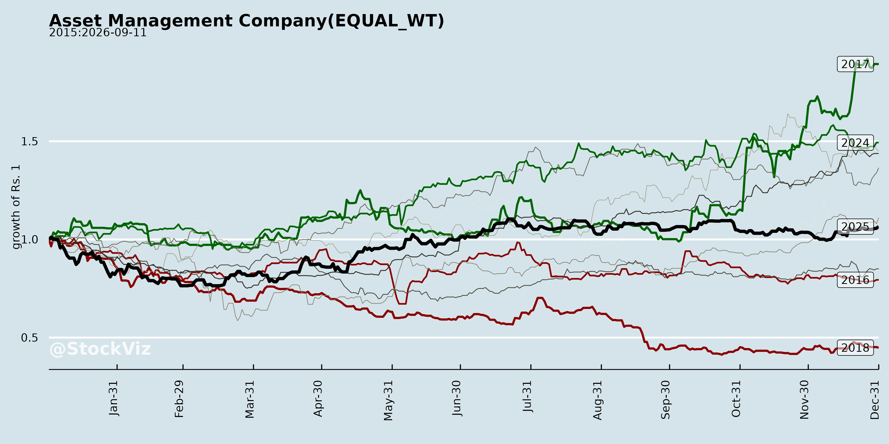
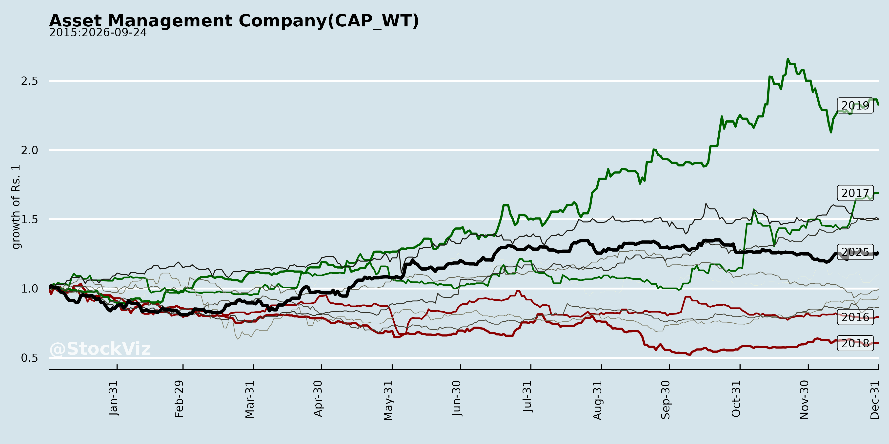
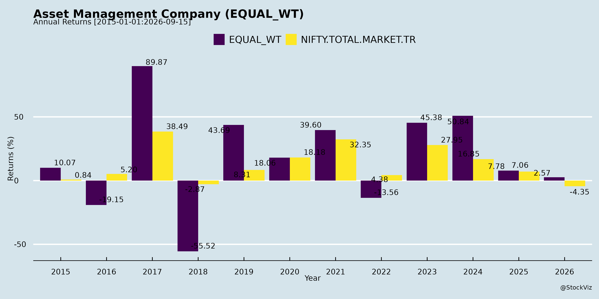
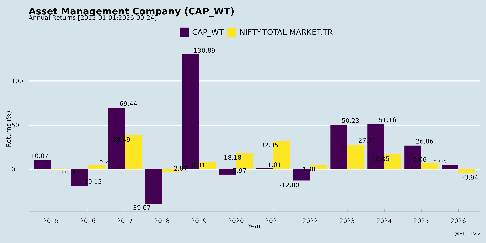
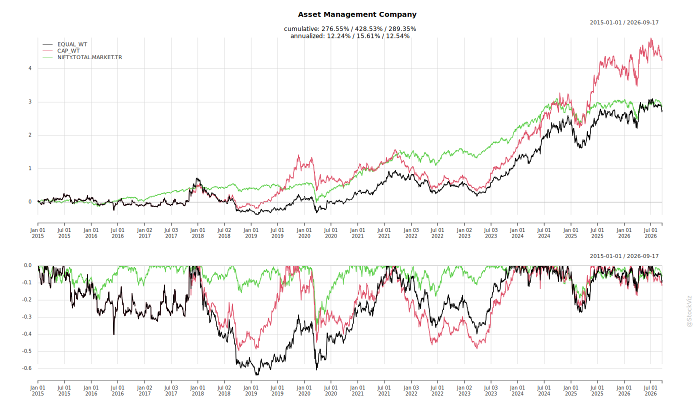
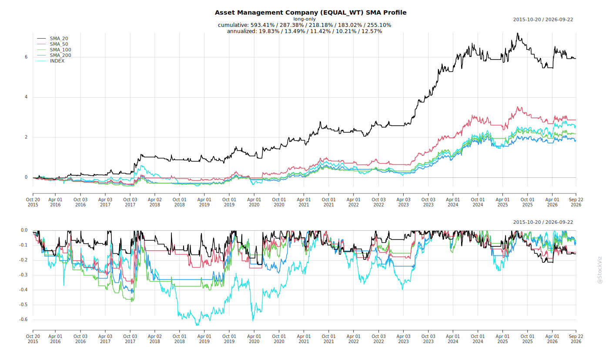
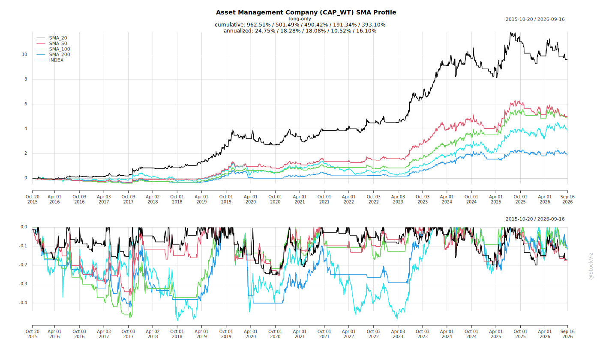
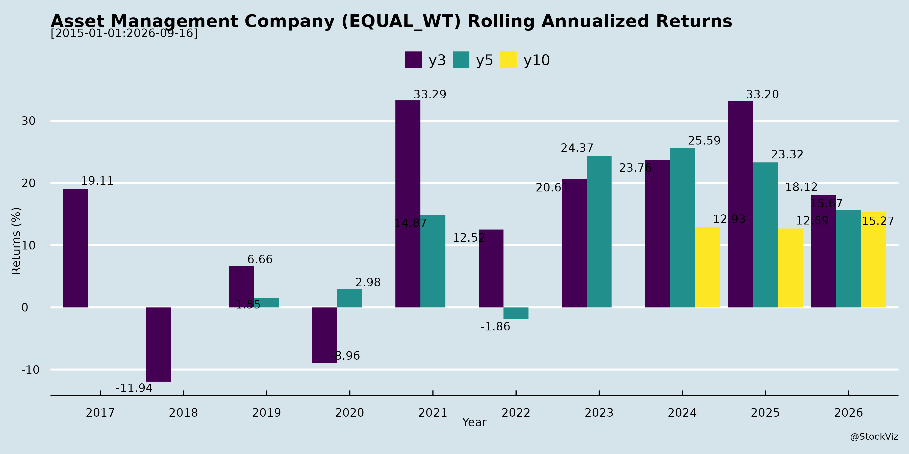
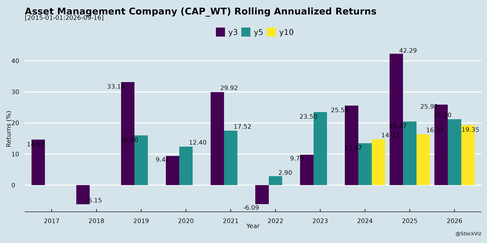

asof: 2025-11-26
Summary Analysis of Indian AMC Sector (Based on Provided Documents)
The documents cover announcements and Q2/H1 FY26 earnings calls from key listed AMCs (Aditya Birla Sun Life, Canara Robeco, HDFC, Nippon Life India, UTI). They highlight robust industry tailwinds amid moderated growth, regulatory pressures, and execution risks. Overall sector AUM grew ~16% YoY to ₹77 lakh cr, driven by retail SIPs (record ₹29k cr/month), but individual AMCs saw 6-12% AUM growth with yields stable at 30-75 bps.
Tailwinds
Headwinds
Growth Prospects
Key Risks
Overall Outlook: Positive structural growth (retail SIPs, digital) offsets near-term yield/regulatory headwinds. AMCs prioritize 20%+ AUM via performance/hybrids, but Q3FY26 VRS/regulatory clarity critical. Sector resilient, with PAT margins ~50-59% sustainable at 30-40 bps yields.
asof: 2025-11-26
Summary Analysis of the Indian Asset Management Company (AMC) Sector
Based on the provided regulatory filings from key players like Aditya Birla Sun Life AMC (ABSLAMC), HDFC AMC, IL&FS Investment Managers (IIML), Nippon Life India AMC (NAM-India), UTI AMC, and others (e.g., Canara Robeco), the Indian AMC sector demonstrates resilience amid regulatory scrutiny and operational challenges. The sector benefits from rising retail participation and digitalization but faces compliance headwinds. Below is a structured analysis of headwinds, tailwinds, growth prospects, and key risks.
Tailwinds (Supportive Factors)
Headwinds (Challenges)
Growth Prospects
Key Risks
| Risk Category | Details | Mitigation from Filings |
|---|---|---|
| Regulatory/Compliance | Delayed filings (IIML fines, freezes); KYC/dividend lapses (NAM-India). | Timely disclosures (Reg 30); board oversight (ABSLAMC HR changes). |
| Operational/Cyber | Data privacy breaches (nil in FY25 per HDFC); subsidiary delays. | ISO 27001/22301 (HDFC); cyber policies; escalation matrices. |
| Financial/Market | AUM volatility; energy/water intensity up (HDFC Scope 1+2: 3,464 tCO2e). | Diversified revenue (99% fund mgmt); digital efficiency. |
| ESG/Reputational | Waste/e-waste mgmt (HDFC: 5.86 MT); gender pay gap (21.67% female wages). | BRSR assurance; DE&I (28% women workforce). |
| HR/Talent | Turnover ~12-14% (HDFC); ESOP dependencies. | Training (73K hrs); wellbeing (100% insurance coverage). |
Overall Outlook: Strong tailwinds from retail SIPs/digitalization outweigh headwinds, with 10-15% YoY profit growth evident. Growth hinges on compliance and ESG; sector AUM could hit ₹70-80 Tn by FY27 (retail-led). Risks are manageable via tech/regulatory adherence, but subsidiary governance remains a watchpoint. Positive for investors amid India’s savings shift to MFs.
asof: 2025-11-26
Summary Analysis of Indian Asset Management Companies (AMCs) Sector
Using the provided documents (earnings transcripts from Canara Robeco and UTI AMC, and investor meeting disclosures from Aditya Birla Sun Life AMC, HDFC AMC, and Nippon Life India AMC), this analysis covers the headwinds, tailwinds, growth prospects, and key risks for the Indian AMC sector as of Q2/H1 FY26 (ended Sep 2025). Insights are drawn from operational highlights, financial performance, industry trends, management commentary, and forward-looking statements. The sector demonstrates resilience amid volatility, with AUM growth supported by retail SIPs, but faces yield and regulatory pressures.
Tailwinds
Headwinds
Growth Prospects
Key Risks
| Risk Category | Details | AMC-Specific Examples |
|---|---|---|
| Regulatory | SEBI expense ratio changes; PFRDA/NPS shifts. Coping strategies pending final guidelines. | All AMCs; Canara Robeco/UTI highlight telescoping impact. |
| Performance Cyclicality | 2-3 year lag for flows post-strong 3/5-yr returns; stress testing key in mid/small-cap. | UTI: Value schemes strong long-term; growth schemes picking up. |
| Market/External | Geopolitical tensions, US tariffs slowing exports/manufacturing; FPI outflows cooling India appetite. | UTI Intl AUM -8% (mark-to-market/FMP maturity). |
| Operational/Cost | VRS payouts (UTI: 479 eligible, avg ₹60-65 lakh/employee; full impact Q3); ESOP costs marginal. Brand transitions (Canara Robeco: potential Robeco/Canara name changes). | UTI: ₹25 crore family pension hit; tax rate to 26-27%. |
| Competition | SIP market share erosion (UTI: 2.9% → 2.7%); fintech/digital natives disrupting onboarding. | Distributor-heavy models prioritize volume over yield. |
| Execution | Workforce realignment (UTI: 351/476 VRS-eligible in sales); digital certification for SIFs. | Delayed NFO approvals; distributor training needs. |
Overall Outlook: Strong structural tailwinds from SIP penetration and digitalization support 15-20%+ sector growth, but headwinds from yields/regulations cap near-term margins (cost-income target 30-40%). Focus on hybrids, B30, and diversification mitigates risks. AMCs like Canara Robeco/UTI emphasize performance, scale, and reinvestment for sustainable PAT growth. Monitor Q3 for VRS/SEBI updates.
asof: 2025-11-26
Based on the provided regulatory filings (postal ballots, financial results, EGM outcomes, and auditor reports from Aditya Birla Sun Life AMC, Canara Robeco AMC, HDFC AMC, IL&FS Investment Managers, Nippon Life India AMC, and UTI AMC), here’s a summary analysis of the sector’s headwinds, tailwinds, growth prospects, and key risks. The documents reflect a maturing industry focused on talent retention (ESOPs), profitability (dividends/bonus), regulatory compliance, and AUM growth amid challenges like investigations and fee pressures.
Projected Sector Growth: 15-20% AUM CAGR (driven by SIPs/equity), with top AMCs gaining share via scale/digital.
| Risk Category | Description | Mitigation from Filings |
|---|---|---|
| Regulatory | SEBI probes (Nippon), SFIO investigations (IL&FS: potential penalties/asset sales). | Active engagement; no provisions yet. |
| Market/Volatility | AUM sensitive to equity markets; fund outflows. | Strong SIPs (stable inflows); diversified products. |
| Competition/Talent | Fee compression; talent poaching. | ESOPs (multiple AMCs); market share gains. |
| Liquidity/Going Concern | IL&FS: low revenue, resolution plan delays. | Liquid assets/dividends; asset sales underway. |
| Dilution/Execution | ESOP/bonus dilution; new director integrations (UTI: 5 appointments). | Shareholder approvals (>99% in most cases). |
| Operational | IT upgrades, branch expansions (Nippon IPO proceeds). | Allocated funds; robust governance. |
Overall Outlook: Positive with strong tailwinds from AUM/SIP growth outweighing headwinds. Sector resilient (PAT up YoY), but IL&FS outlier drags sentiment. Growth hinges on regulatory resolutions and equity bull run; monitor SEBI/SFIO outcomes. Top AMCs (Nippon, HDFC) best positioned.
asof: 2025-11-26
Summary Analysis: UTI Asset Management Company Ltd (UTI AMC) in the Indian AMC Industry Context
Using the provided documents (UTI AMC’s Q2 & H1 FY2025-26 investor presentation/press release and Nippon Life India’s ETF feeder fund announcement), this analysis focuses on UTI AMC as a key Indian asset manager. Insights from Nippon highlight industry trends like foreign inflows and GIFT City innovations. Overall, UTI AMC shows resilient core growth amid volatility, with AUM expansion but pressured revenues from lower fair value gains. Industry tailwinds (e.g., SIP/digital surge, foreign interest) support prospects, but competition and costs pose challenges.
Tailwinds (Positive Factors)
Headwinds (Challenges)
Growth Prospects
Key Risks
Overall Outlook: UTI AMC’s core business is resilient (normalized PAT up YoY), buoyed by retail/digital trends and diversification. Tailwinds from SIP/B30/foreign flows outweigh headwinds, positioning for 10-12% AUM growth. Focus on passive/ESG/digital will drive prospects, but monitoring equity volatility and costs is critical. Nippon’s launch underscores industry innovation potential for UTI.
Copyright © 2023 SAS Data Analytics Pvt. Ltd. All rights reserved.